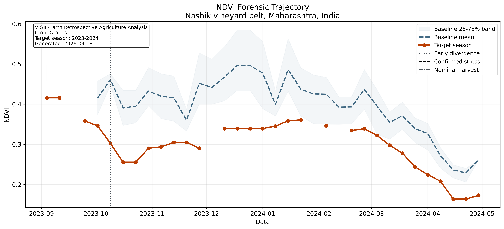
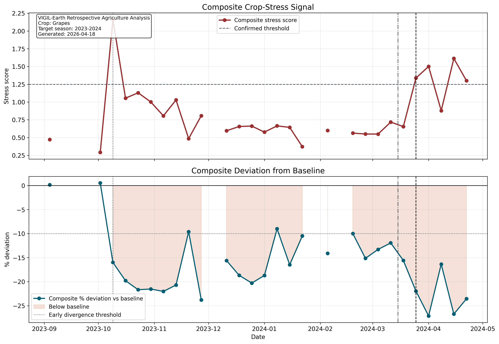
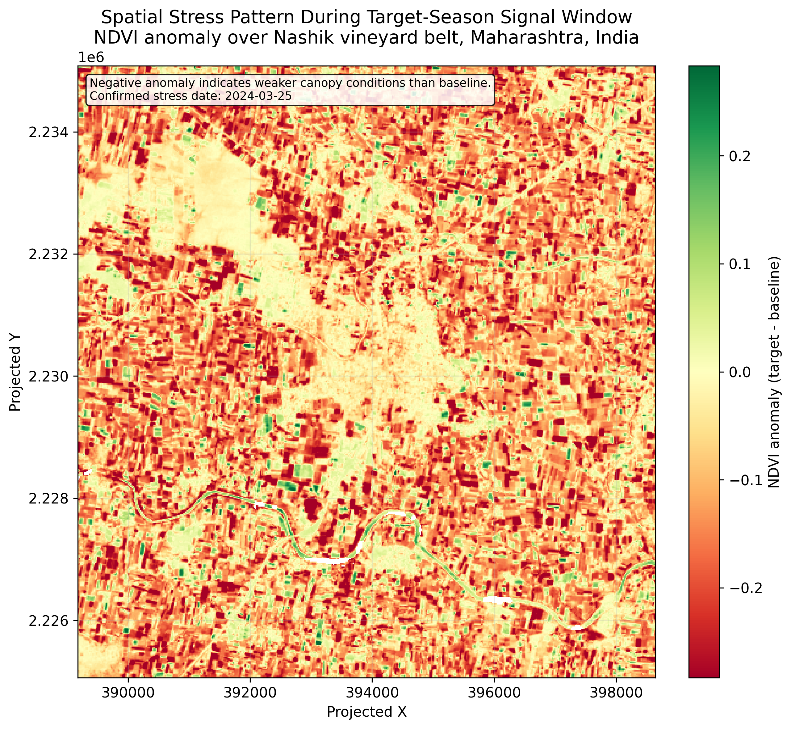
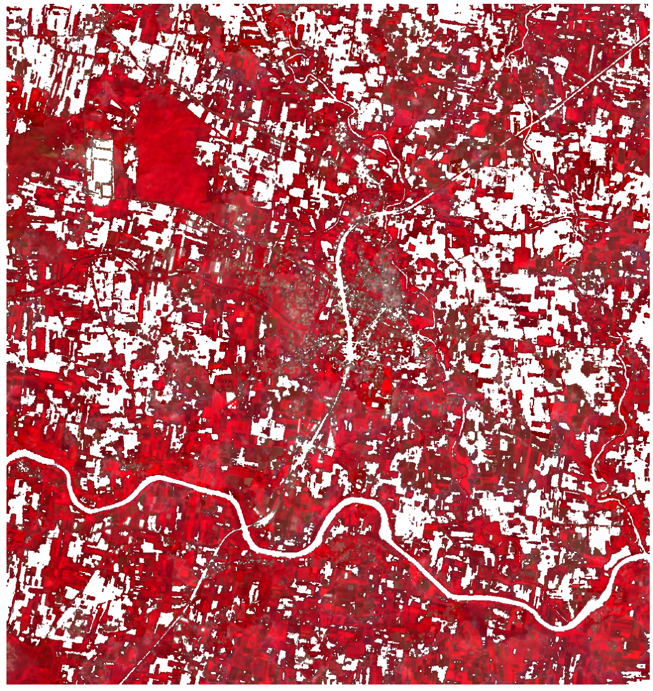
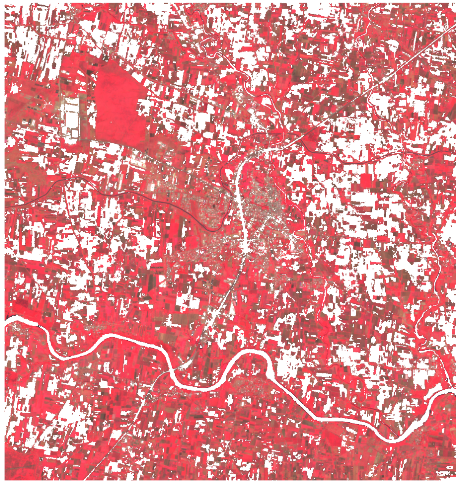

Nashik Grapes (2023) Retrospective AOI-Level Vegetation Underperformance Analysis
Key findings for operators, insurers, and analysts
This report evaluates AOI-level vegetation underperformance in the Nashik grape belt using Sentinel-2 time series. The logic is traceable from acquisition through aligned baseline comparison to external timing consistency checks. The inference is AOI-level and based on a vineyard-likely canopy subset, not on parcel boundaries.
The central risk is delayed recognition of biological stress
Traditional indicators such as arrivals, prices, export flows, and claims are typically downstream expressions of agronomic conditions. The operational question is whether crop-condition deterioration is visible early enough to improve decision timing before optionality narrows. This report evaluates timing of canopy deviation, not price forecasting.
Risk under evaluation
Detect crop underperformance before contracts, procurement, insurance, or supply decisions become materially more expensive to adjust.
Why conventional signals lag
Economic indicators are downstream expressions of agronomic conditions. Satellite observations record canopy condition before those downstream adjustments become visible. This inference is temporal, not causal for price formation.
Research Objective and Framing
The report is framed as a retrospective remote-sensing test of whether persistent vegetation deviation functions as an early proxy for seasonal underperformance under a defined baseline comparison. The proxy reflects canopy condition, not labeled yield, and the analysis is retrospective rather than a claim of real-time certainty on the first date of divergence.
Hypothesis
Persistent vegetation index deviation can act as an early proxy for crop underperformance.
Research question
Can satellite-derived vegetation signals detect agronomic stress before market signals emerge?
Approach
- Multi-year NDVI baseline comparison
- Weekly temporal aggregation
- Cross-validation with weather and reported damage events
How the signal is constructed and validated
The method converts raw satellite observations into weekly crop-health trajectories, compares the target season against aligned baseline behavior, and tests whether the observed deviation is consistent with independent evidence of agronomic stress. Cause, mechanism, observation, and scope are kept explicit throughout.
Data sources
Sentinel-2 vegetation indices, weather-event reports, crop-damage reporting, and harvest-window context.
Signal construction
Weekly target-season vegetation trajectory compared against the 2020-2022 baseline.
Yield linkage
Vegetation deviation is interpreted as a canopy underperformance proxy rather than a direct yield estimate. The proxy is biologically grounded but not yield-labeled.
Validation
Persistence, external-event alignment, and multi-index agreement are used to separate structural deviation from measurement noise.
Observation system
The signal is derived from optical satellite imagery processed as a seasonal time series rather than from isolated scenes. Temporal aggregation reduces noise but may smooth short-term shocks.
Platform
- Satellite: Sentinel-2 (MSI)
- Product: Sentinel-2 L2A surface reflectance
- Source: Planetary Computer STAC
- Revisit frequency: ~5 days with the Sentinel-2A/2B constellation
Bands used
- B08 NIR
- B04 Red
- B05 Red-edge
- B02 Blue
- SCL scene classification for cloud and quality masking
| Attribute | Value |
|---|---|
| Operational resolution | 10 m for NDVI bands (B08, B04); 20 m for the red-edge context band B05 |
| Acquisition window | 2020-09-01 to 2024-04-30 across baseline and target seasons |
| Role in this report | Weekly crop-health monitoring for retrospective stress detection and timing analysis |
Nashik grape belt coverage
AOI definition
Region of interest: Nashik vineyard belt, Maharashtra, India.
| Coordinate | Value |
|---|---|
| West | 73.94 |
| South | 20.12 |
| East | 74.03 |
| North | 20.21 |
Regional context
The AOI represents the Nashik grape belt used in this retrospective case. The unit of analysis is AOI-level canopy behavior rather than parcel-level yield estimation. The imagery used later in the report is masked to a vineyard-likely canopy subset because no cadastral parcel registry is included in the workflow. This inference is regional, not parcel-specific.
Why NDVI is appropriate for this analysis
Grapes are canopy-driven crops, and seasonal canopy vigor is directly relevant to crop condition. NDVI is therefore an appropriate first-order indicator for this retrospective analysis because canopy stress alters red and near-infrared reflectance. NDVI does not isolate a specific stress driver.
Canopy dependence
Grape production depends on sustained canopy health through the season.
What NDVI captures
NDVI is sensitive to leaf density, greenness, and overall canopy vigor.
Stress detectability
Stress reduces chlorophyll and canopy performance, which changes reflectance in the red and NIR bands.
NDVI and companion indicators
NDVI is the primary signal. EVI and NDRE are used as supporting indices to reduce dependence on a single vegetation measure and to test whether the observed stress generalizes across related canopy metrics. Multi-index agreement strengthens inference but does not identify a unique biophysical cause.
Band mapping
- NIR: B08
- Red: B04
- Red-edge support: B05
Processing steps
- Cloud and quality masking via SCL
- Reflectance scaling and raster alignment
- Weekly temporal aggregation
Baseline logic
- Baseline seasons: 2020-2022
- Target season: 2023
- Week-by-week alignment across season bins
How deviation was measured
Periods compared
- Baseline period: 2020-2022 seasons
- Target period: 2023 season
- Season window: September to April
Deviation formula
Weekly percentage deviation is computed as:
How the 13.3% was computed
The headline 13.3% is the final pre-harvest vegetation underperformance proxy. It is computed as the median negative composite percentage deviation in the final 42-day pre-harvest window, where the composite combines NDVI, EVI, and NDRE deviation signals. This measure reflects late-window canopy condition, not the earliest detection date and not realized yield.
Satellite signal detection
Figure 1 shows sustained deviation from the baseline envelope beginning around 2023-10-09, which is the earliest retrospectively identifiable persistent divergence under the defined weekly comparison. The inference is based on persistence across aligned weeks, not on a single weak scene, and it does not by itself establish real-time operational confirmation on that first date.

Figure 1. Weekly AOI-level NDVI for the 2023 season versus the aligned 2020-2022 baseline envelope. The figure supports a retrospective conclusion that persistent below-baseline divergence is identifiable from around 2023-10-09 under the defined weekly comparison. It does not by itself establish real-time operational confirmation on that first date, and it supports AOI-level inference only.
Decision table
| Signal | Supported interpretation | Potential decision response |
|---|---|---|
| Baseline seasons | 2020-2022 establish the expected seasonal vegetation path under aligned weekly comparison. | Use as reference for normal AOI-level canopy behavior. |
| Earliest retrospective divergence | Persistent divergence is retrospectively identifiable from around 2023-10-09. | Review sourcing, field validation, and open exposure earlier in the season. |
| Final late-window proxy | 13.3% below baseline in the defined 42-day pre-harvest window; canopy proxy only. | Use as late-window severity context, not as the earliest detection date. |
Signal Robustness and Temporal Consistency
Figure 2 summarizes the multi-index stress signal. The evidence is supported by duration as well as magnitude: the target season remains below baseline in 26 valid weekly observations from 2023-10-09 through 2024-04-22. Sustained deviation across 26 aligned temporal bins is difficult to explain as a one-date artifact and is more consistent with structural seasonal deviation than with isolated noise.

Figure 2. Composite deviation score formed from NDVI, EVI, and NDRE deviations. The figure supports persistence and multi-index agreement across the season. The threshold line reflects the report’s internal confirmation rule and is not presented as a formally calibrated statistical boundary.
Robustness interpretation
- The signal is supported by duration, not isolated observations.
- Single-scene divergence can result from transient haze, residual cloud, or phenological noise; multi-week persistence is materially harder to explain as artifact.
- Sustained deviation across 26 aligned temporal bins is more consistent with structural seasonal deviation than with isolated noise.
- This conclusion is supported by three independent layers: temporal persistence, multi-index agreement, and external event alignment.
Image-based evidence layer
Figure 3 provides the spatial anomaly field, while Figure 4 assembles the baseline-target-anomaly comparison. The false-color panels in Figure 4 are masked to a persistent vineyard-likely canopy subset within the AOI because no parcel registry is present in the repo. The image evidence is interpretive support, not an independent yield measurement.

Figure 3. AOI-level NDVI anomaly relative to the baseline reference. The figure supports spatial distribution of canopy anomaly within the AOI. It does not identify parcel-level damage or crop-specific diagnosis on its own.

Figure 4a. Early-October baseline false-color Sentinel-2 composite assembled from acquisitions on 2020-10-06 05:27:09.024000+00:00, 2021-10-11 05:27:39.024000+00:00, 2022-10-01 05:26:51.024000+00:00. Scene-level cloud cover for the input dates ranged from 4.3% to 28.0% before AOI masking. The panel provides visual context for baseline canopy condition under a common display scale and is clipped to a persistent vineyard-likely canopy mask within the AOI, not to parcel boundaries.

Figure 4b. Target-season false-color Sentinel-2 acquisition from 2023-10-11 05:27:39.024000+00:00. Scene-level cloud cover was 0.8%, and valid AOI coverage remained near complete after filtering. Relative weakening in canopy response is visually consistent with the time-series deviation, but the panel is interpretive support rather than independent proof. This remains a canopy proxy, not a parcel-level crop inventory.
Figure 4c. Baseline-subtracted NDVI anomaly map for the target season over the AOI. Negative values indicate below-baseline canopy response. The map is supportive of AOI-level anomaly interpretation only.
Processing note
All images are normalized using consistent reflectance scaling and AOI boundaries.
Legend interpretation
- False-color red: higher vegetation response
- Yellow / green tones: reduced vegetation response
- NDVI anomaly map: negative values indicate below-baseline canopy condition
Ground evidence and delayed market expression
Ground / market reality
Weather and industry reports document vineyard damage across the Nashik grape belt. The mechanism is agronomic disruption followed by canopy impairment, whereas production and market outcomes become visible in the February-April harvest window rather than at the onset of biological stress. This section addresses timing consistency, not market prediction.
Sequence validation
Observed sequence matches expected crop stress propagation. Extreme weather events act as the exogenous driver, canopy function is the biological mechanism, vegetation-index deviation is the satellite observation, and harvest visibility is the downstream outcome. NDVI records canopy response but does not isolate a specific stressor, so this section should be read as consistency evidence rather than unique causal proof.
| Date | Event | What it supports |
|---|---|---|
| 2023-03-04 to 2023-03-18 | Unseasonal rain and hail damage reported across the Nashik grape belt. | Early stress-driver context |
| 2023-10-09 | Earliest retrospectively identifiable persistent divergence in the satellite time series. | First below-baseline canopy divergence under aligned comparison |
| 2023-11-27 | Additional rain and hail damage reported in Nashik talukas. | Continued seasonal stress context after divergence had already emerged retrospectively |
| Final 42-day pre-harvest window | Window used to compute the 13.3% canopy proxy. | Source window for the late-window proxy |
| 2024-02 to 2024-04 | Harvest window. | Downstream outcome window |
Why the retained scene set is defensible
Discovery
229 Sentinel-2 scenes were discovered for the configured AOI and seasonal window.
Retention
186 scenes were retained for analysis after seasonal and quality filtering.
Filtering
43 scenes were excluded overall, including 11 with low valid-pixel fraction and additional non-retained scenes from season and quality logic.
| Filter step | Purpose |
|---|---|
| Scene discovery filter | Restrict to AOI, season window, and cloud-cover constraints |
| Cloud / quality masking | Remove invalid pixels before index calculation |
| Minimum valid fraction | Exclude scenes with insufficient usable AOI coverage |
| Missing-week handling | Weeks with no usable observations are marked as missing, not silently averaged |
Evaluation of alternative explanations
| Hypothesis | Evaluation |
|---|---|
| Cloud artifact | Addressed via cloud masking, valid-pixel filtering, and explicit missing-week handling. |
| Seasonal shift | Baseline aligned week-by-week across multiple prior seasons. |
| Sensor noise | Observed across NDVI, EVI, and NDRE rather than a single metric alone. |
| Single anomaly event | Rejected due to multi-week persistence through the season. |
What the signal enables operationally
Operational value arises when the signal changes the timing of review before downstream indicators catch up. The table below translates the analysis into potential action without extending the interpretation beyond AOI-level canopy evidence.
| Signal | Supported interpretation | Potential decision response |
|---|---|---|
| Earliest retrospective divergence | Persistent divergence is retrospectively identifiable around 2023-10-09, approximately 158 days before the nominal harvest anchor. | Review sourcing, field validation, and open exposure earlier in the season. |
| Persistent multi-week gap | The signal is supported by duration rather than by a single scene or isolated week. | Targeted irrigation, nutrition, scouting, and disease review. |
| Final late-window proxy | 13.3% below baseline in the defined 42-day pre-harvest window; canopy proxy only. | Use as late-window severity context for contract review and exposure management. |
| Confirmed stress | The stricter internal confirmation rule is first met after the nominal harvest anchor. | Insurance documentation and post-season review. |
Illustrative commercial relevance
The value case shown below is illustrative only. It does not represent observed avoided loss in the Nashik case. Its purpose is to show the order of magnitude of commercial exposure that earlier decision timing can influence.
Without system
- Later reaction after arrivals, contracts, or prices make the shortfall more visible.
- Higher spot-market exposure.
- Weaker insurance evidence timeline.
With system
- Earlier review after the retrospective divergence date of 2023-10-09.
- Reduced open exposure if the signal is actioned.
- Earlier supply diversification and evidence collection.
| Input | Illustrative value |
|---|---|
| Annual procurement volume | 5,000 tons |
| Equivalent weight | 5,000,000 kg |
| Illustrative late-market price increase | ₹10–₹25 per kg |
| Illustrative gross price-risk exposure at full volume | ₹5.0 Cr – ₹12.5 Cr |
| Early-action levers | Pre-contracting / supplier switch / hedging |
What the satellite layer detects vs what it does not
This system is designed to detect canopy condition and relative biological deviation, not price behavior. That boundary is an analytical strength because it keeps interpretation within the scope supported by the data and constrains overreach in commercial or legal review.
| Detects | Does not detect |
|---|---|
| Persistent canopy underperformance | Final market prices |
| Vegetation stress relative to baseline | Exact labeled yield |
| Spatial and temporal risk concentration | Sub-field causes at Sentinel-2 scale without local validation |
| Early decision timing advantage | Exact disease diagnosis or irrigation diagnosis from NDVI alone |
| AOI-level vegetation response | Parcel-level management heterogeneity at 10 m / 20 m resolution without parcel masks |
Scope of Valid Inference
This analysis can conclude
- The 2023 AOI-level vegetation trajectory is below the 2020-2022 baseline under aligned weekly comparison.
- A persistent divergence is retrospectively identifiable from around 2023-10-09 and persists across the observed season.
- The signal is supported by three independent layers: temporal persistence, multi-index agreement, and external event alignment.
- The 13.3% value is a final pre-harvest canopy proxy computed from the defined late window.
This analysis cannot conclude
- Exact parcel-level outcomes within the AOI.
- Exact realized yield without harvest-linked validation data.
- Exact market-recognition timing or market-price prediction.
- The unique causal contribution of any single stressor from NDVI alone.
External source traceability
The report relies on external sources as timing-consistency evidence rather than as direct quantitative calibration inputs. The table below records what each source supports so the validation layer remains reviewable.
| Source title | Publisher | Date | Supports | Link |
|---|---|---|---|---|
| Maharashtra grape farmers worried as unseasonal rains, hail wipe out 50,000 acres of vineyards | Down To Earth | March 2023 | Early-season weather shock and reported damage scale | [insert URL] |
| Rain, hail damage grape vineyards, onion crops in Nashik | Times of India | 2023-11-27 | Additional in-season damage in Nashik talukas | [insert URL] |
| Disastrous Weather Events Report 2023 | IMD Pune | 2023 | High-volatility weather context across the year | [insert URL] |
| Grape exports 15 per cent dip likely | Indian Express | 2023 | Additional agronomic and export-impact context | [insert URL] |
| Nashik grape | Wikipedia | Access date required | Background context only; not primary evidentiary support | [insert URL] |
Reproducibility and Data Pipeline
The workflow is structured so that the analysis can be recreated from the same AOI, date window, and data source definitions. Reproducibility applies to the vegetation-signal workflow, not to external market behavior.
Pipeline steps
- Acquire Sentinel-2 L2A imagery
- Apply cloud masking using SCL
- Compute NDVI, EVI, NDRE
- Aggregate weekly medians
- Construct multi-year baseline
- Compute deviation vs baseline
- Validate against external evidence
Traceability notes
- Data source: Sentinel-2 (Copernicus / STAC)
- Tools: Python, raster processing, and geospatial libraries
- AOI, seasonal window, and filtering logic are explicitly defined in the pipeline configuration
- Charts and maps are generated from saved CSV and raster outputs rather than hand-drawn summaries
{kind=link}
{kind=link}
{kind=link}
{kind=link}
{kind=link}